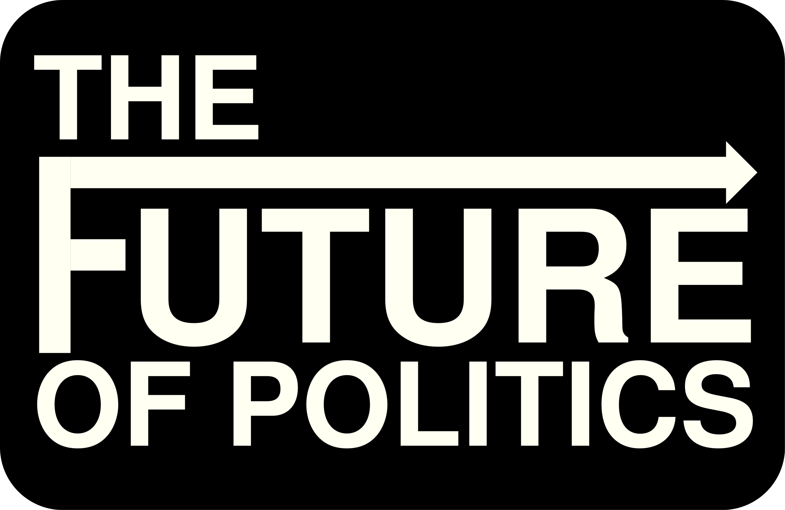

About ▾
People
Partners
Research ▾
Research Themes
Borders, Belonging, and Global Mobility
Fairer Futures
Forecasting Political Risk
Wealth, Power, and Precarity
Governance, Conflict, and Shifting Global Power
Publications and Working Papers
Education ▾
The future of political science education
Undergraduate study
Master's study
PhD study
Training
Impact
News and Events

People
Laura Montanaro
Director, The Future of Politics
Florian G. Kern
Research Lead, Political Risk